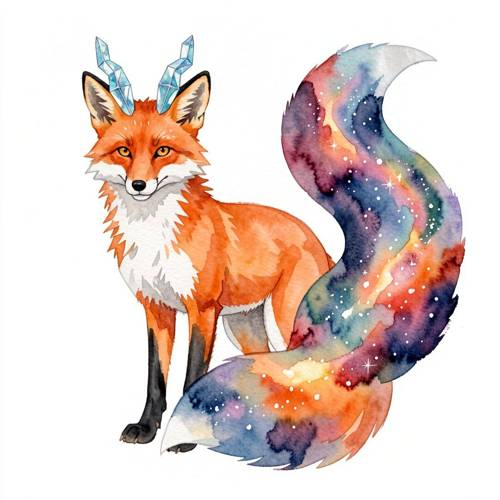
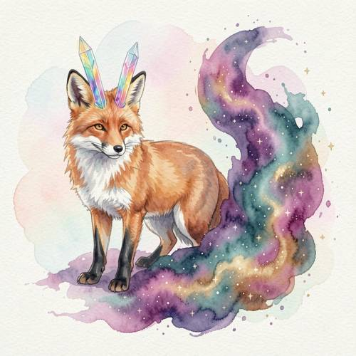
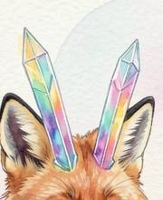

Grammar — In the watercolor style, a fox has crystal-like horns and its tail is
In the watercolor style, a fox has crystal-like horns and its tail is not fluffy, but consists of flowing nebulae.

Direct — one call, no iteration

Continuum — Qwen3.8-27B + FLUX.2-klein-9B
Judge — Direct
FAILGrammar - Negation — The fox's tail is depicted with a fluffy texture and outline, characterized by visible fur-like strokes along its edges. This contradicts the prompt's negative constraint that the tail should 'not be fluffy'.
PASSCompound - Imagination — The image shows a red fox with two blue, faceted, translucent horns that have the appearance of crystals. The tail of the fox is colored with a swirling pattern of purple, blue, red, and orange, interspersed with white specks resembling stars, which depicts flowing nebulae.
PASSStyle — The image is rendered in a watercolor style. This is visible in the blended colors with soft edges, the translucent layers of paint, and the characteristic bleeding effect, especially noticeable in the fox's fur and the nebula-patterned tail.
Judge — Continuum
PASSGrammar - Negation — The fox's tail is depicted as a swirling, colorful mass of what appears to be cosmic gas and stars. It is not rendered with fur or a fluffy texture, thus adhering to the negative constraint 'tail is not fluffy'.
PASSCompound - Imagination — The image portrays a fox with two multi-colored, translucent, and faceted horns on its head, consistent with the description of 'crystal-like horns'. The fox's tail is a large, flowing shape composed of purple, teal, and gold hues, speckled with white and gold dots, accurately representing 'flowing nebulae'.
PASSStyle — The image is executed in a watercolor style. This is evident from the soft, blended colors, the characteristic blooms and washes of paint, and the visible bleeding of colors at the edges, particularly in the nebula-like tail and the faint background.
What the agent did
Thinking
Let me understand the task. The user is asking for a watercolor-style image of a fox with crystal-like horns, with a tail made of flowing nebulae (not fluffy). I'll generate this image with flux2-klein (per the benchmark policy). After that, I'll inspect and edit as needed, and mark the best. Let me write a good prompt: "watercolor painting, fox with crystal-like translucent horns, tail made of flowing colorful nebulae, cosmic swirls of starlight, not fluffy, watercolor washes, soft edges, paper texture, pastel colors" Now let's generate.
Step 1 — `generate_image`
{
"prompt": "Watercolor painting of a graceful fox with translucent crystal-like horns growing from its head, refracting rainbow light. Its tail is not fluffy fur but a long flowing plume made of swirling cosmic nebulae \u2014 clouds of violet, magenta, teal and gold stardust with tiny stars, streaming and dissolving like ink in water. Soft watercolor washes, wet-on-wet bleeds, delicate paper texture, loose brushwork, gentle pastel background, dreamy and ethereal art style.",
"model": "flux2-klein"
}
Result img_0
Thinking
The result is excellent: watercolor style, a fox with translucent crystal-like horns (two rainbow crystal horns visible), and the tail is not fluffy but a flowing nebulae tail composed of swirling violet/magenta/teal/gold cosmic clouds and stars. Let me check the details — the horns look crystalline and good. The tail is clearly a nebula. This matches the prompt well. Let me quickly zoom in on the horn area to confirm that it looks crystal-like rather than something else.
Step 2 — `inspect_region`
{
"image": "img_0",
"roi": "the crystal horns on the fox's head",
"padding": 0.2
}
Result img_1

Thinking
Upon closer inspection, I confirmed that the horns are beautifully rendered as faceted crystal prisms, with iridescent (rainbow) refraction — clearly "crystal-like." The tail in the full image is a flowing nebula, not fluffy. The watercolor style is also achieved with soft washes of color and paper texture. All elements of the prompt are present and correct: - Watercolor style ✓ - Fox ✓ - Crystal-like horns ✓ (two faceted, iridescent crystal horns) - Tail is not fluffy but a flowing nebula ✓ This is a good result. Let me mark this as the best and stop.
Model
On close-up inspection, confirmed that the horns are rendered as properly faceted crystal prisms with iridescent rainbow refraction, and the full image shows a watercolor fox whose tail is a plume of a flowing starry-sky nebula — not fluffy at all. All the elements of the request are present: watercolor washes with paper texture, fox subject, crystal horns, nebula tail.
Step 3 — `mark_best`
{
"image": "img_0",
"reason": "Watercolor fox with faceted iridescent crystal horns and a flowing nebula tail (stars, violet/magenta/teal/gold cosmic plume) \u2014 every element of the prompt is present and correct."
}
Thinking
Done. This image satisfies all the elements of the prompt. I'll stop here and report back to the user.
Model
The painting is complete and marked as the best result. It shows a watercolor fox with two faceted, rainbow-refracting crystal horns on its head, and its tail flows as a long cosmic nebula plume — swirling clouds of violet, magenta, teal, and gold stardust dotted with tiny stars, dissolving into the paper like ink in water. The soft washes, wet bleeds, and visible paper texture carry the watercolor style throughout.